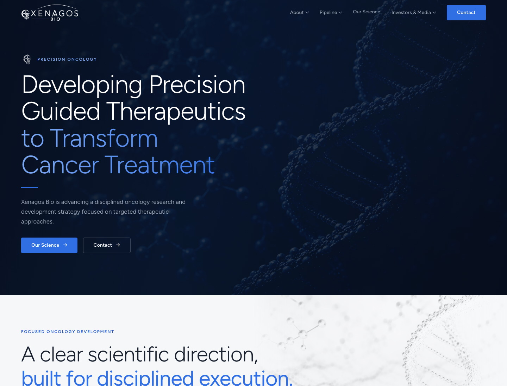
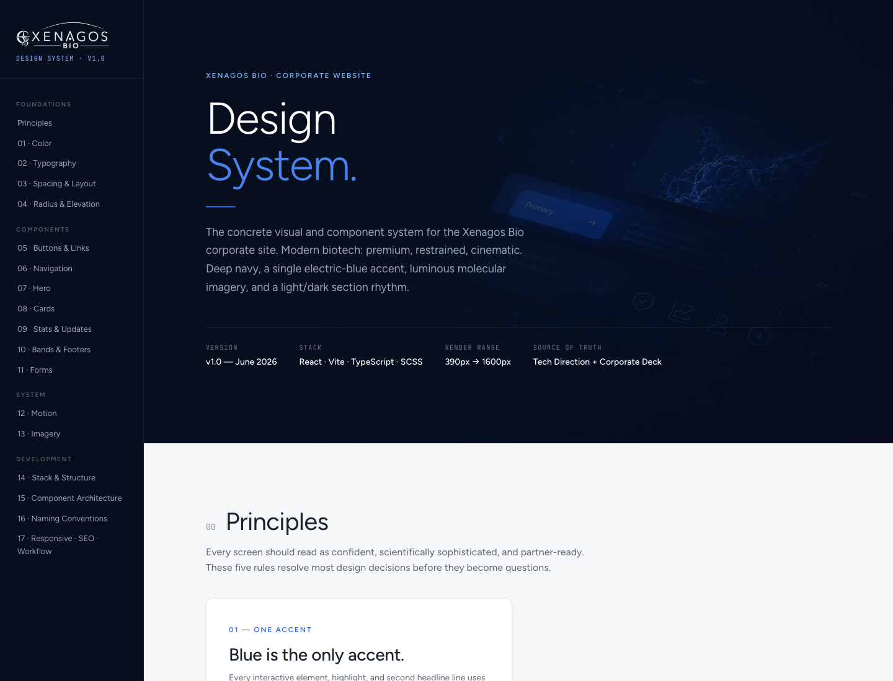
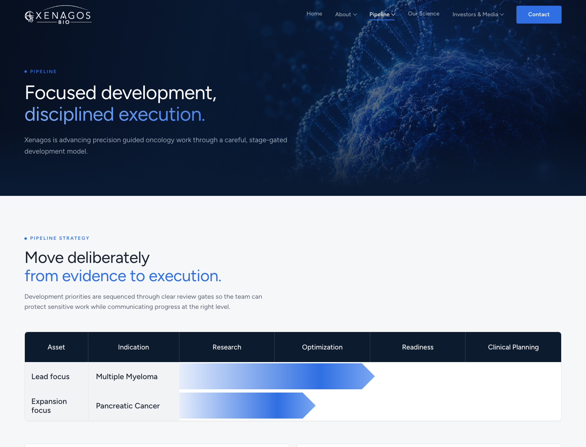

Xenagos Bio Website
I used an AI-assisted design and development workflow to build Xenagos Bio's startup web presence, translating precision-oncology positioning into a credible launch surface and a hidden internal design-system reference.

A young biotech company needed to feel credible before it had a large public footprint.
- ContextXenagos needed a disciplined web presence for precision oncology, pipeline communication, leadership credibility, and investor/media review.
- WebsiteThe site needed to feel premium and scientific without becoming cold, generic, or over-animated.
- SystemThe work also needed a reusable internal reference so future pages, components, and handoffs could stay consistent.

The homepage had to make Xenagos feel focused, premium, and scientifically mature.
The design direction used a restrained dark/light rhythm, molecular imagery, precise blue accenting, and direct oncology language to create a launch surface that could work for partners, investors, and scientific audiences.
- PositioningMade precision-guided therapeutics and disciplined oncology development visible in the first screen.
- Visual systemBalanced deep navy, electric blue, white space, and luminous scientific imagery without turning the page into a generic biotech template.
- Conversion pathKept science, pipeline, investor/media, and contact paths clear for a company still building public traction.

The design system made the site maintainable instead of one-off.
Alongside the site, I created a hidden design-system reference inside the web repo so the team could inspect principles, tokens, navigation, card patterns, motion guidance, imagery direction, and build conventions in one place.
- Shared sourceThe reference captured the concrete design decisions behind color, typography, spacing, radius, elevation, and component behavior.
- Build alignmentIt mirrored the React, Vite, TypeScript, and SCSS structure used by the website so design intent stayed close to engineering reality.
- Handoff-readyThe reference captured reusable design decisions so future pages, components, and build handoffs could stay consistent.
The pipeline page turned early-stage development into a clearer operating story.
- Stage-gated clarityThe pipeline view framed Multiple Myeloma and Pancreatic Cancer work through deliberate development phases.
- Investor readabilityScientific content was structured for fast scanning without flattening the seriousness of the work.
- Launch flexibilityThe system gave the company room to add leadership, news, investor media, and deeper science content as the public story matured.

The site had to communicate progress without overclaiming maturity.
For a startup biopharma company, credibility comes from precision: clear scientific direction, appropriate restraint, and enough structure for reviewers to understand where the company is headed.
- RestraintThe interface avoided excessive motion and leaned into disciplined composition, legible hierarchy, and calm authority.
- Evidence shapeThe content model supported science, pipeline, leadership, and investor/media sections without forcing unsupported claims.
- Portfolio fitThe project adds a direct startup biopharma proof point alongside the broader pharma AI and enterprise design-system work.
Biotech credibility is a design-system problem, not just a homepage problem.Xenagos Bio — startup biopharma website and internal design-system handoff